ZERO-BACKGROUND ILLUSTRATED GUIDE · CELL ENERGY × MOLECULAR MOTORS × MACROSCOPIC WORK
How cells spend energy, and how molecular motors lift you up
From a meal → ATP → one “power stroke” of a myosin head → a 10 cm muscle contraction → a 20 kg barbell leaving the floor.
This long read uses figures, numbers and analogies to explain the whole chain, and to balance the microscopic
“piconewton · nanometre” books against the macroscopic “joule · newton” ones.
1 ATP≈ 8×10⁻²⁰ J, enough for one 10 nm stroke
1 myosin headforce ≈ 4 pN, step ≈ 10 nm
10¹⁷ motorsin parallel and in series, giving hundreds of newtons
efficiency ≈ 22%the other 78% becomes heat — that is why you sweat
If you only have a minute, hold on to this four-stage picture:
Table 0 The whole panorama in one minute
Stage
What happens
In everyday words
① Get cash (cellular respiration)
Glucose and fat are dismantled step by step inside mitochondria, and the energy is stored in ATP (about 40% stored, about 60% lost as heat)
Change your salary (food) into small coins (ATP). The coin jar is tiny, so you withdraw as you spend
② Pay (ATP hydrolysis)
ATP → ADP + Pi, releasing about 8×10⁻²⁰ J
One coin into the motor — enough for exactly one small step
③ Do the work (molecular motors)
The myosin head grabs the thin filament and rotates about 70°, pulling it about 10 nm with about 4 pN of force
Countless hands rowing together; each hand moves a billionth of a centimetre
④ See the result (amplified to the macroscopic)
10¹⁷ hands add force in parallel and 10⁵ sarcomeres add displacement in series, then tendons and bones act as levers
It all adds up to hundreds of newtons and tens of centimetres — the barbell leaves the floor
In one line: ATP is the small change, the motors are the hands, the filaments are the ropes, the sarcomere is the knot,
the tendon is the cable, the skeleton is the lever and the brain is the starting gun. Lifting a barbell is just
10¹⁷ hands each moving 10 nanometres, adding up to one metre. And throughout, strictly:
chemical energy eaten = work done on the outside + heat released (about 78% becomes heat — hence the sweat).
00⁺The whole story in 5 sentences
The body does not run on fuel directly; it runs on cash, and the cash is ATP. Sugar and fat are savings, mitochondria are the ATM, and ATP is the only small change a cell can spend immediately. The jar is tiny, so it must be refilled as it is spent.
One ATP hydrolysis releases only about 8×10⁻²⁰ J — absurdly little, roughly enough to lift a single bacterium by 8 micrometres. So a cell cannot light a bonfire; it can only pay in small instalments.
Molecular motors turn those instalments into motion. A myosin head grabs, pulls once — about 10 nm of displacement and about 4 piconewtons (4×10⁻¹² N) of force — and one ATP is spent per cycle.
Macroscopic force comes from numbers: about 10¹⁷ motors in parallel (adding force) plus 10⁵ sarcomeres in series (adding displacement), amplified further by tendons and bones, gives 200–400 N of pull and tens of centimetres of movement.
Microscopic and macroscopic books balance: chemical energy eaten = work done on the outside + heat released. Muscle is about 22% efficient and the other ~78% becomes heat — which is exactly why your face flushes and you sweat when you lift.
Memory hook: ATP is the coin, the motor is the hand, the filament is the rope, the sarcomere is the knot,
the tendon is the cable, the skeleton is the lever, and the brain is the starting gun. Lifting is what happens when
10¹⁷ hands each move 10 nanometres and every one of those motions is added up.
01The big picture: your body’s energy pipeline
First, the geography. Energy changes hands four times inside you:
Figure 1 Energy changes hands four times inside the body. Note two key numbers: only about 40% of the energy from respiration is banked in ATP and about 60% becomes heat at once; and each cell holds only about two seconds’ worth of ATP, so it must be made as it is used.Figure 1-b The whole chain in one picture: from a single ATP molecule to lifting 100 kg, a causal chain amplified about 10²⁰ times. (Text inside the figure follows the page language.)
1.1 Three energy terms you must keep apart
Table 1 Three levels of energy currency (the easiest thing to confuse in this whole topic)
Level
Examples
Role in the body
Sense of scale
Savings (long-term store)
Fat, glycogen
Energy stored for days to months; cannot drive a motor directly
A 70 kg adult carries well over 100,000 kcal in fat plus glycogen
Cash (immediate currency)
ATP
The only universal means of payment; every energy-consuming reaction uses it
Total body ATP is only about 50–60 g; hard exercise uses it up in 2–3 seconds
The ATM (conversion machinery)
Mitochondria, glycolytic enzymes
Converts savings into cash; oxygen is the oxidiser of this system
Every cell contains hundreds to thousands of mitochondria
Why all this trouble? Because a cell cannot burn a spoonful of oil the way an engine does. Releasing that much energy at once
would destroy proteins and membranes in an instant. Split into small ATP packets, the energy can be delivered exactly where it is needed
and its rate can be tuned precisely — pull harder, hydrolyse a few more.
02How a cell turns food into ATP
2.1 Stop one: digestion and absorption
Carbohydrates are broken into glucose, fats into fatty acids and glycerol, proteins into amino acids. They enter the blood and are
delivered to roughly 37 trillion cells.
2.2 Stop two: cellular respiration — three steps from savings to cash
Glycolysis (in the cytoplasm, no oxygen needed): one glucose → two pyruvate, net gain 2 ATP. Very fast; the vanguard for sprinting and lifting.
The citric acid cycle (in the mitochondrial matrix): pyruvate is dismantled completely and high-energy electrons are handed to the carriers NADH and FADH₂.
Oxidative phosphorylation (inner mitochondrial membrane): electrons travel down the respiratory chain, pumping protons to one side to build a “proton dam”; as protons flow back they spin ATP synthase, a rotary motor. One glucose yields about 30–32 ATP in total.
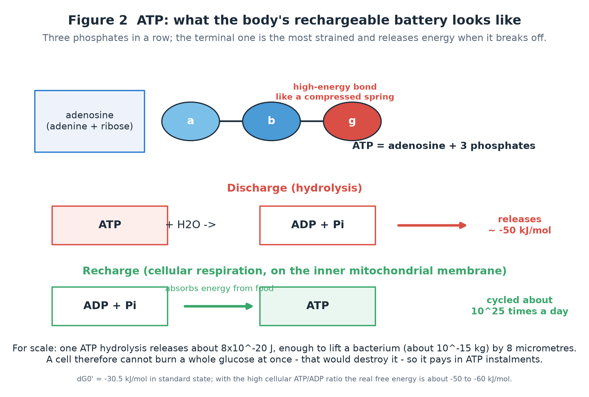
Figure 2 ATP discharging and recharging. ATP is adenosine plus three phosphates; hydrolysing the terminal (γ) phosphate gives ADP + Pi and releases about 50 kJ/mol of free energy. Note that ATP is not a fuel but a courier — its only job is to hand energy to wherever it is needed.
Work it out: how much energy is one ATP?
Under physiological conditions, hydrolysing 1 mol of ATP releases about 50 kJ = 5×10⁴ J, and 1 mol contains 6.02×10²³ molecules:
5×10⁴ ÷ 6.02×10²³ ≈ 8×10⁻²⁰ J per ATP.
What can that do? Lift a 10⁻¹⁵ kg bacterium by 8 micrometres, or move a 4 pN force through 10 nm — exactly one power stroke.
2.3 The daily cash flow: why so little ATP is enough
Table 2 ATP stock and flow (estimates for a 70 kg adult; orders of magnitude)
Item
Amount
Conversion
Total body ATP
about 50–60 g
about 8×10²² molecules; enough for only 2–3 s of hard exercise
Daily ATP turnover
about 50–75 kg
roughly your own body weight; about 10²⁶ molecules per day
Turnover ratio
about 1000×
each ATP molecule is charged and discharged over 1000 times a day
Peak demand in hard exercise
about 10²² molecules/s
some 100 times the resting rate — this is the bottleneck
Because the “savings → cash” conversion has limited speed, the body keeps three supply systems of different power:
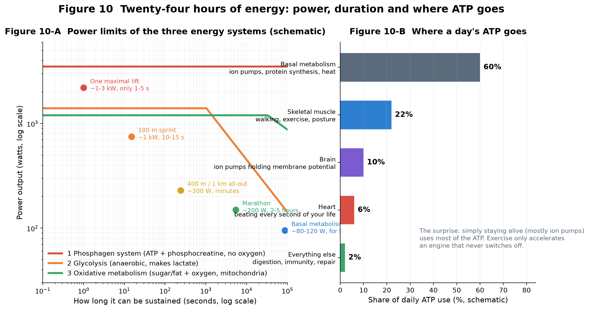
Figure 10 Left: the power-versus-duration curves of the three energy systems (schematic). The phosphagen system (ATP + phosphocreatine) has the highest power but lasts seconds; glycolysis takes over for tens of seconds to two minutes; oxidative metabolism is the least powerful but almost unlimited. Right: most of a day’s ATP is spent simply staying alive (ion pumps, protein synthesis, body temperature). Exercise only accelerates an engine that never switches off.
Direct link to lifting: a single maximal lift runs mostly on the 3–5 second budget of the phosphagen system. That is partly why
“one breath, one rep” feels true — and why you need 1–3 minutes between heavy sets for phosphocreatine to refill.
03Six nested layers: from muscle to filaments
To understand how a tiny action becomes a large force, first see how muscle is packed.
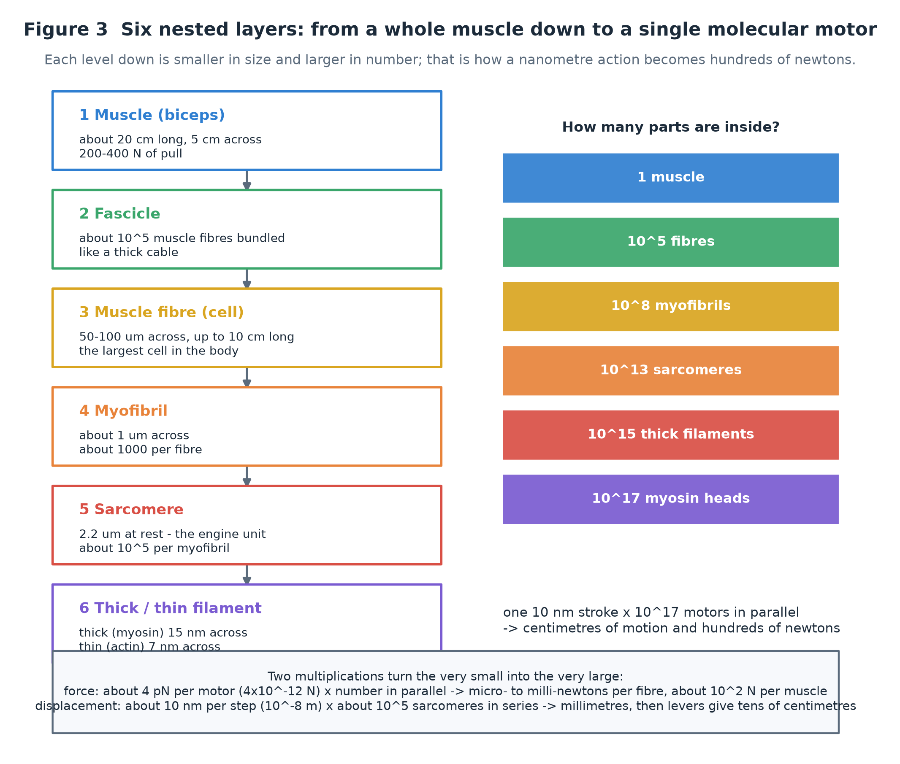
Figure 3 The six nested layers. Each level down is smaller in size and larger in number: 1 muscle → 10⁵ fibres → 10⁸ myofibrils → 10¹³ sarcomeres → 10¹⁷ myosin heads. The secret of amplification lives in these orders of magnitude.
3.1 The sarcomere: the real engine unit
The sarcomere is the segment between two Z-discs, about 2.2 µm long at rest. It contains two kinds of filament:
Thick filament (about 15 nm across): made of myosin; the heads sticking out along it are the molecular motors.
Thin filament (about 7 nm across): a double helix of actin, the track the motors walk on; tropomyosin and troponin wind around it as a safety switch.
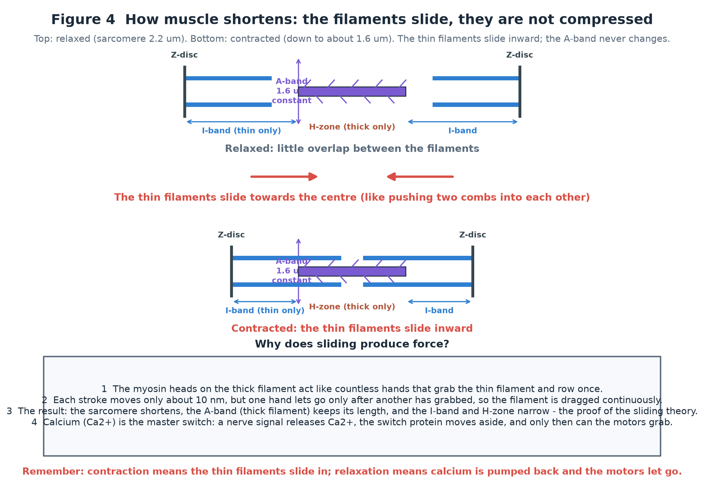
Figure 4 The sarcomere and its two states. Relaxed (top), the thin and thick filaments overlap little and the I-band and H-zone are wide; contracted (bottom), the thin filaments slide deeper towards the centre, the two Z-discs are pulled closer, but the A-band (thick filament) never changes length. This is the key evidence for the 1954 sliding-filament theory: muscle shortens not because filaments are compressed but because they slide into each other.Figure 4-b Anatomy of the sarcomere in both states (vector diagram). At rest the filaments overlap little and the I-band and H-zone are wide; when contracted the thin filaments slide deeper, the two Z-discs are pulled closer, and the A-band keeps its length throughout. (Text inside the figure follows the page language.)
Calcium is the master switch, ATP is the master latch.
A nerve signal arrives → the sarcoplasmic reticulum releases Ca²⁺ → troponin changes shape → tropomyosin moves aside → the binding sites on actin are exposed → the motors can grab (contraction begins only now).
The signal stops → the calcium pump (SERCA) returns Ca²⁺ to the sarcoplasmic reticulum (this costs ATP too) → the switch resets → the muscle relaxes.
If ATP runs out completely, the motors cannot let go and the muscle stays locked. In life this shows up as the stiffness of exhausted muscle.
04Molecular motors: the cell’s porters and rowers
Molecular motors are protein machines that convert the chemical energy of ATP hydrolysis directly into directed mechanical motion —
no gears, no crankshaft, no piston. Three families are the most famous:
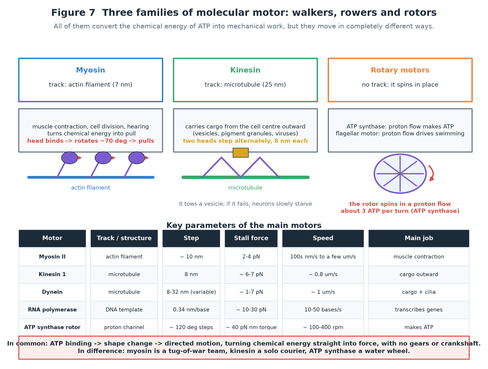
Figure 7 The three families and their key parameters. Myosin II walks on actin and drives muscle contraction; kinesin and dynein walk on microtubules and carry cargo inside cells; ATP synthase and the bacterial flagellar motor are rotary, driven by a proton flow. All of them speak the same language: ATP.
4.1 Three ways of walking
Myosin II (rope-pulling): two heads alternately grab the actin filament and rotate in a power stroke of about 10 nm. It works in crowds: thousands of heads pull at once to give a sustained force.
Kinesin (hand-over-hand walking): two heads step alternately, 8 nm per step, walking along a microtubule like a person, towing a vesicle behind it — the “solo courier” that moves material from the cell centre to the periphery.
Rotary motors (water-wheel style): ATP synthase lets protons flow through a channel in the membrane and spins a rotor, attaching one phosphate roughly every 120°, three steps per ATP; the bacterial flagellar motor uses the same trick to become a propeller.
A sense of scale: how microscopic are these motors?
Force: one myosin head, about 4 pN = 4×10⁻¹² N. For comparison, a human hair weighs about 10⁻⁷ N — 25,000 times more.
Step: about 10 nm = 10⁻⁸ m, roughly a hundred-thousandth of a hair’s width, and about 3–4 actin monomers apart (each monomer spans about 2.7 nm).
Speed: with no load, 10–20 steps per second, that is 0.1–0.2 µm/s up to a few µm/s — slower than a sloth; but there are so many of them that the whole muscle is not slow at all.
Counter-intuitive but crucial: the first job of ATP is to make the motor let go.
Once a myosin head has grabbed actin in a strong bond, it can detach only by binding a new ATP.
So plenty of ATP means fast release, fast cycling, fast and supple contraction; no ATP means everything locks up.
05The cross-bridge cycle: a full accounting of one stroke
Zoom in on a single myosin head. Its working day is a five-step cycle:
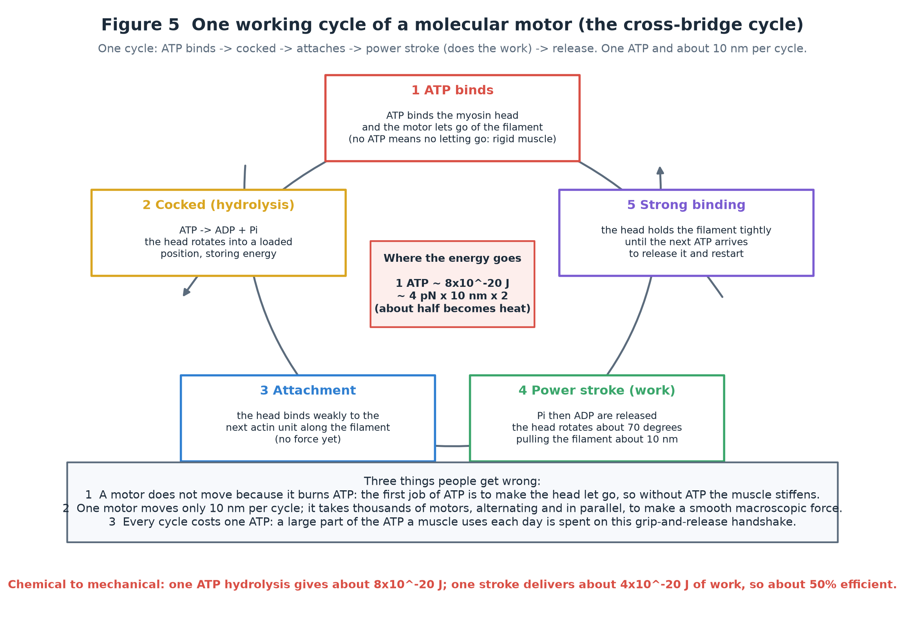
Figure 5 The five steps of the cross-bridge cycle. ① ATP binds (head detaches from the filament) → ② hydrolysis cocks it (ATP → ADP + Pi; the head rotates to a loaded position) → ③ weak attachment to the next actin unit → ④ the power stroke (Pi then ADP are released and the head rotates about 70°, pulling the filament about 10 nm with about 4 pN) → ⑤ the strong, waiting state until the next ATP arrives to release it. One ATP per cycle.
5.1 Energy ledger for a single cycle
Table 3 Energy in and out for one cross-bridge cycle (order of magnitude)
Item
Value
Note
Input: free energy of ATP hydrolysis
≈ 8×10⁻²⁰ J
ΔG ≈ −50 kJ/mol under physiological conditions
Output: mechanical work
F × d = 4 pN × 10 nm ≈ 4×10⁻²⁰ J
assuming full force throughout the stroke
Output: heat
≈ 4×10⁻²⁰ J
single-molecule efficiency about 50% (load dependent)
Whole-muscle efficiency
about 22% (work efficiency)
because the calcium pump, the sodium–potassium pump and viscoelastic tissue all cost energy too
Do not mix up two different “efficiencies”:
① Conversion efficiency of a single motor (chemical → mechanical) can reach 30–50% at a suitable load;
② Work efficiency of a whole muscle (external work ÷ total metabolic energy) is usually only 20–25%, because calcium pumping, sodium–potassium pumping and basal metabolism are included.
This also explains why the same workout exhausts different people differently: pacing changes the amount of internal wasted work and isometric effort.
5.2 The trade-off between force and speed: why lifting is slow
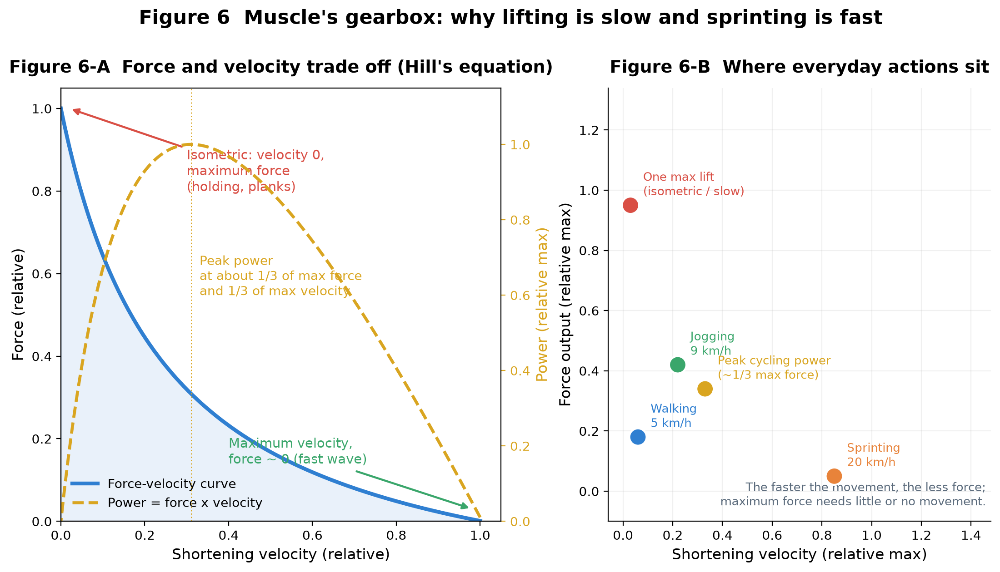
Figure 6 Muscle’s “gearbox”. A: the Hill force–velocity relation — the faster the shortening, the less force; their product (power) peaks at an intermediate speed, roughly one third of maximal force and one third of maximal velocity. B: everyday actions sit at different points: lifting is at the high-force, low-speed end, sprinting at the low-force, high-speed end, and maximum power output (all-out cycling) in between.
This one curve explains three everyday facts:
Lifting must be slow: to get maximal force you must approach isometric contraction (speed ≈ 0).
Planks and holding a weight are exhausting: external work is zero, but the motors still cycle, the calcium pump still pumps and the sodium–potassium pump still restores the membrane potential — ATP keeps burning.
“Maximum power” actions (all-out cycling, kettlebell swings) do not use a maximal load but a moderate one moved fast — which lands mid-curve.
06From tiny motion to big force: two multiplications
This is the heart of the whole story: how does a nanometre-scale molecular action become hundreds of newtons of macroscopic force? The answer is two multiplications.
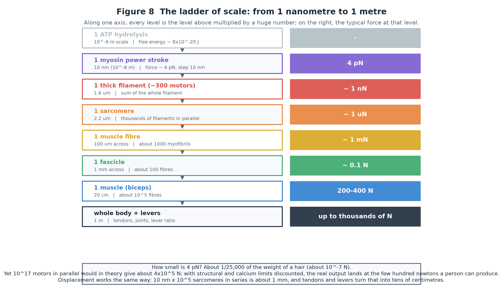
Figure 8 The ladder of scale. Each level is the level above multiplied by a huge number. One motor gives 4 pN, but a whole biceps reaches 200–400 N; one step is 10 nm, but sarcomeres in series shorten the muscle by millimetres, which levers then turn into tens of centimetres.
6.1 Multiplication one: adding force in parallel
At any instant, thousands of motors pull in the same direction, and their forces add in parallel:
One myosin head: about 4 pN.
One thick filament: about 300 heads, some fraction bound at any moment → about 0.1–1 nN in total.
One muscle fibre (about 10⁵ myofibrils and millions of thick filaments in parallel) → the order of 1 mN.
One biceps (about 10⁵ fibres in parallel) → 200–400 N.
From 4 pN to 300 N is an amplification of about 10¹⁴.
Why can’t we just add 10¹⁷ × 4 pN? Because real muscle applies three discounts:
① not every head is bound at the same instant (only a small fraction pull at once; the duty ratio of fast muscle is of order 5%);
② the angle between a head and the filament loses part of the force;
③ calcium regulation, fatigue and metabolic supply all limit output.
The resulting maximum tension is about 300 kN/m² (about 3 kg/cm²), which is consistent with
“4 pN per head, about 10⁹ heads per mm², duty ratio about 5%” — microscopic parameters and macroscopic measurement agree.
6.2 Multiplication two: adding displacement in series
The total shortening of a muscle is the sum of the shortening of all sarcomeres in series:
One sarcomere: from 2.2 µm to 1.6 µm, about 0.6 µm (each head contributes a 10 nm step, accumulated over many cycles).
One 10 cm fibre: about 10⁵ sarcomeres in series → total shortening of several centimetres.
Add tendon elasticity and skeletal levers (joint moment arms) and the hand travels tens of centimetres while the barbell rises a metre.
The order size of the two multiplications: lifting 20 kg by 1 m requires about 10²² ATP molecules to be hydrolysed (see the calculation in section 7).
As “motor orders” that is roughly 10²² power strokes — while the energy you spend is about half a kilocalorie, one peanut.
07Lifting a barbell: the energy ledger of one lift
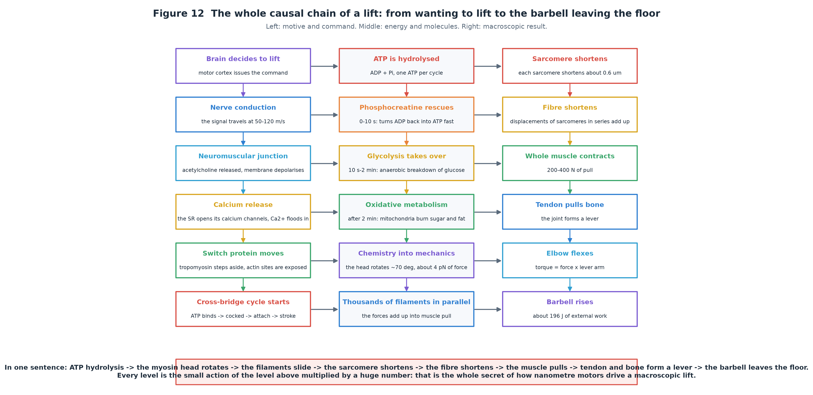
Figure 12 The same chain in three columns: left is “motive and command” (brain → nerve → calcium → switch protein), middle is “energy and molecules” (ATP and the three supply systems → the power stroke → forces adding up), right is “macroscopic result” (sarcomere shortening → muscle contraction → skeletal lever → the barbell rises).
7.1 The energy ledger of one lift (20 kg, raised 1 m)
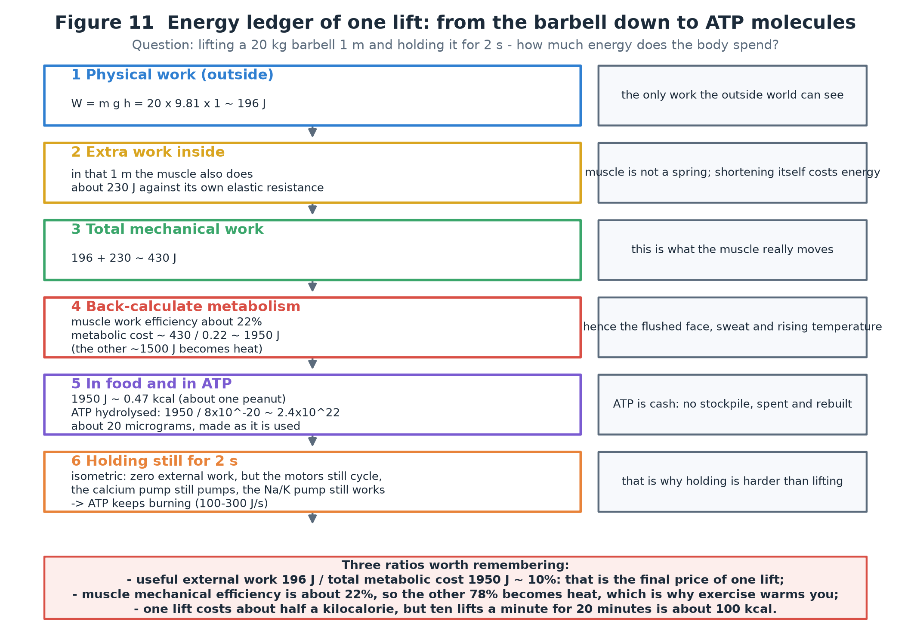
Figure 11 Six steps to work out what one lift “costs”. Bottom line: 196 J of useful external work, about 230 J of extra internal work,
so at 22% efficiency the total metabolic cost is about 1,950 J ≈ 0.47 kcal, requiring about 2.4×10²² ATP (about 20 micrograms, made as it is used).
Table 4 The full ledger of one lift, so you can check every step
Step
Formula / value
Meaning
① Useful external work
W = mgh = 20 × 9.81 × 1 ≈ 196 J
the only work the outside world can see
② Additional internal work
≈ 230 J (order of magnitude)
against the muscle’s own elastic and viscous resistance; varies with the movement and the individual
③ Total mechanical work
196 + 230 ≈ 430 J
what the muscle actually “moves”
④ Metabolic cost
430 ÷ 0.22 ≈ 1,950 J
back-calculated from about 22% work efficiency; about 1,500 J becomes heat
⑤ In food energy
1950 ÷ 4184 ≈ 0.47 kcal
about one peanut
⑥ In ATP molecules
1950 ÷ 8×10⁻²⁰ ≈ 2.4×10²²
about 20 micrograms of ATP, hydrolysed and rebuilt continuously
⑦ Holding still for 2 s
external work 0, but metabolism continues at 100–300 J/s
motors cycle, calcium is pumped back, sodium–potassium pumps restore the potential — holding is harder than lifting
A common puzzle: ATP weighs only about 50 g in total, so how can one lift hydrolyse 2.4×10²² molecules (about 20 µg)?
No contradiction. Those 20 µg are the total hydrolysed during that movement — a flow, not a stock. Phosphocreatine and mitochondria
rebuild ADP into ATP within seconds, just as a café sells hundreds of coffees a day while only ten cups sit on the counter.
7.2 The order of events: how the body supplies energy with “zero delay”
0–3 s: the ATP already present is hydrolysed directly (a tiny stock, used up almost instantly).
3–10 s: phosphocreatine turns ADP back into ATP rapidly (the emergency power bank), giving the highest power.
10 s–2 min: glycolysis takes over (anaerobic, producing lactate; lower power but still high intensity).
After 2 min: oxidative metabolism dominates (mitochondria burning sugar and fat), lowest power but nearly unlimited, and it repays the oxygen debt.
This section lines the cellular numbers up with the quantities in a physics textbook.
8.1 Correspondence table
Table 5 Microscopic ↔ macroscopic correspondence
Macroscopic concept
Formula / unit
What it corresponds to in the cell
Work
W = F·d, joules (J)
force of one myosin head × displacement; the sum over countless motors
Force
F, newtons (1 N = 10¹² pN)
about 4 pN per motor, added in parallel to reach newtons
Displacement
d, metres (1 m = 10⁹ nm)
10 nm per step, added in series through sarcomeres to reach metres
Power
P = W/t, watts (W)
rate of ATP hydrolysis × work per ATP; peaks at 1–3 kW
Energy
E, joules; food often in kcal (1 kcal = 4184 J)
free energy of ATP hydrolysis ≈ 8×10⁻²⁰ J each
Efficiency
η = useful output ÷ total input
about 30–50% for one motor, about 22% for whole muscle
Heat
Q, joules
unused free energy; about 78% of muscle metabolism becomes heat
Entropy / second law
ΔStotal ≥ 0
why efficiency can never be 100%: some free energy must always be dissipated as heat
8.2 Efficiency compared: the body is not efficient, but it lasts
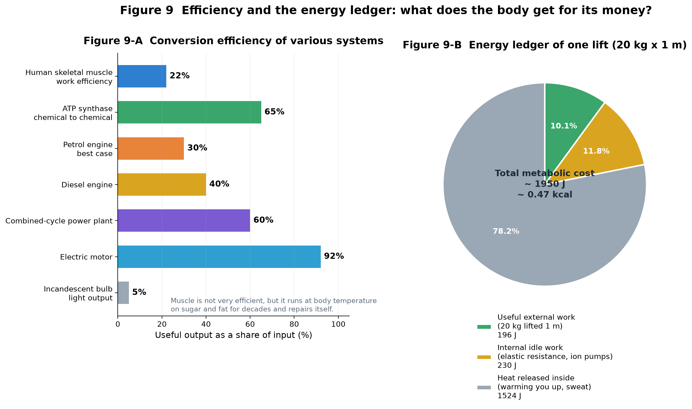
Figure 9-b Left: conversion efficiency of various systems. Human skeletal muscle is about 22%, below a diesel engine (about 40%) and far below an electric motor (about 90%) — yet it works at body temperature, on sugar and fat, for decades, and repairs itself. That is the real advantage of a biological system. Right: where the energy of one lift goes; only about 10% becomes useful external work, and most of the rest becomes heat.
Why you must sweat: about 78% of metabolic energy becomes heat. At rest the body produces 80–120 W (like an incandescent bulb);
during hard exercise it can exceed 1000 W. If heat loss cannot keep up, body temperature rises — sweating and dilated skin vessels are the
cooling system fitted to this low-efficiency engine.
8.3 How the books balance
Take one 20 kg lift through 1 m, and reconcile input with output:
Table 6 Energy conservation, with 1,950 J of metabolic cost as 100%
Item
Energy
Share
Where it goes
Useful external work (lifting the barbell)
196 J
≈ 10%
gravitational potential energy; can be converted again when you let go
Internal “idling” work
≈ 230 J
≈ 12%
ends up as heat too
Metabolic and internal heat
≈ 1,520 J
≈ 78%
body temperature, sweat evaporation, blood flow
Total
≈ 1,950 J
100%
exactly conserved
Three equations worth remembering:
① Conservation: chemical energy in = work done outside + heat released + energy temporarily stored.
② Power = force × velocity: this is why maximum power occurs at intermediate speed and force (Figure 6).
③ 1 kcal (a food calorie) = 4184 J: this converts the cell-scale “×10⁻²⁰ J” into calories on your plate.
09Common misconceptions and a self-test
9.1 Six common misconceptions
1. “Muscle contraction compresses the fibres like a spring.”
No. The thick and thin filaments hardly change length; what changes is how much they overlap. The evidence: during contraction the A-band (thick filament region) keeps its length while the I-band and H-zone narrow (Figure 4).
2. “ATP is a fuel that burns up and is gone.”
ATP is much more like a rechargeable battery or cash: hydrolysed to ADP + Pi, it is quickly recharged by phosphocreatine, glycolysis and oxidative metabolism. The ATP you turn over each day weighs about as much as you do.
3. “Holding a weight does no work, so it costs no energy.”
Physically no external work is done, but physiologically ATP is still burned: motors keep cycling, the calcium pump keeps returning calcium and the sodium–potassium pump maintains the membrane potential. That is why planks and isometric training are so tiring.
4. “Muscle shortens because motors push the filament, or glue themselves to it.”
It is a grab–pull–release cycle: ATP binding detaches the head, hydrolysis cocks it, and it then grabs the filament and rotates about 70°. Permanent “glue” (a persistent bond) is a pathological state, not normal contraction.
5. “A single motor is very strong, so muscle is strong.”
The opposite: one motor gives only 4 pN (a hair weighs 25,000 times more). Muscle force comes entirely from numbers: force adds in parallel, displacement adds in series.
6. “Low efficiency means the body is wasteful.”
Low efficiency is a requirement of thermodynamics (the second law). The real advantages of a biological system are self-repair, operation at ambient temperature and pressure, fuel from sugar and fat, and decades of continuous service. Engineered systems are more efficient but need oil, cooling and maintenance.
9.2 Self-test (think first, then open the answer)
Q1 One ATP hydrolysis releases about 8×10⁻²⁰ J; one myosin power stroke produces 4 pN over 10 nm. What is the mechanical efficiency of that stroke?
Work = 4×10⁻¹² N × 10×10⁻⁹ m = 4×10⁻²⁰ J. Efficiency = 4×10⁻²⁰ ÷ 8×10⁻²⁰ = 50% (ideal, fully loaded; it varies with load). For a whole muscle the figure falls to 20–25% because of calcium pumping and other costs.
Q2 Total body ATP is only about 50 g. Why can hard exercise last seconds to tens of seconds?
Because ATP is a flow, not a stock. Phosphocreatine re-phosphorylates ADP within seconds and glycolysis then takes over. Daily ATP turnover is 50–75 kg, meaning each molecule is recharged over a thousand times.
Q3 Lifting a 10 kg box by 0.5 m: how much external work, and at 22% efficiency how much metabolic energy, in kcal?
W = 10 × 9.81 × 0.5 ≈ 49 J; metabolic cost ≈ 49 ÷ 0.22 ≈ 223 J; in kcal, 223 ÷ 4184 ≈ 0.053 kcal (more in reality, because internal work is added).
Q4 Why do you shake and fatigue faster when you “hold” a heavy weight than when you lift it quickly?
An isometric contraction does no external work, yet the motors still cycle and the calcium and sodium–potassium pumps still consume ATP, while raised intramuscular pressure reduces blood flow and oxygen supply. Income does not rise, spending continues — so fatigue comes sooner.
Q5 If every myosin head bound and pulled at the same instant, how much force would that be? Why is it impossible?
The crude figure is 10¹⁷ × 4 pN ≈ 4×10⁵ N (tens of tonnes). It cannot happen because the duty ratio is low (most heads are cocking or waiting), the angle costs part of the force, and calcium regulation and metabolic supply limit output. Real maximum tension is about 300 kN/m², and a whole biceps develops 200–400 N.
10Appendix: quick-reference data and sources
10.1 Quick-reference numbers
Table 7 Frequently used values (orders of magnitude, for intuition; sources and individuals vary)
Food is savings, ATP is cash, mitochondria are the ATM; motors are hands, filaments are ropes, sarcomeres are knots.
One power stroke is only 10 nanometres, 4 piconewtons and 8×10⁻²⁰ joules; but 10¹⁷ hands in parallel and 10⁵ sarcomeres in series,
amplified by tendons and bones, become a 20 kg lift and 196 J of external work — and about 78% of the energy ends up as the heat that makes you sweat.
10.3 Main sources and further reading
Huxley, A. F. & Niedergerke, R. (1954) Structural changes in muscle during contraction; Huxley, H. E. & Hanson, J. (1954) — the original sliding-filament papers.
Hill, A. V. (1938) The heat of shortening and the dynamic constants of muscle — the classic source of the force–velocity relation.
Finer, J. T., Simmons, R. M. & Spudich, J. A. (1994) Single myosin molecule mechanics: piconewton forces and nanometre steps, Nature — direct measurement of single-molecule force and step size.
Kinosita, K. and colleagues on the rotation and torque of F₁-ATP synthase (Nature / Cell, 1997–2000).
Single-molecule studies of kinesin stepping and stall force by Block, S. M., Svoboda, K., Vale, R. D. and others.
Quantitative work on myosin head density and duty ratio in skeletal muscle (used here to check that “4 pN → 300 kN/m²” is self-consistent).
Textbooks: Guyton & Hall Textbook of Medical Physiology, Lehninger Principles of Biochemistry, Alberts, Molecular Biology of the Cell.
Note: values such as “×10⁻²⁰ J”, “4 pN”, “10 nm” and “22%” are order-of-magnitude estimates meant to build intuition and check self-consistency, not precision measurements.
This page is part of an offline, single-file web document. All figures live in the assets/ folder next to it (PNG for data figures, SVG for structural diagrams). Open it in any browser, or use “Print → Save as PDF” for an e-book version.